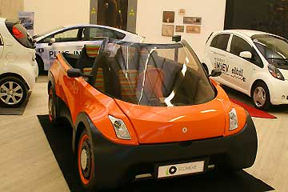
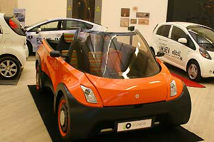
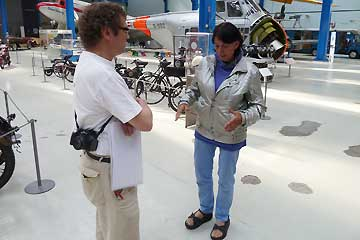
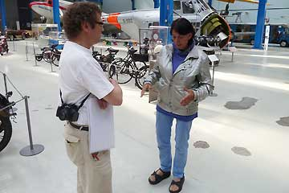

 


Ægteparret Nina Rasmussen og Hjalte Tin blev modtaget af blandt andre klima- og energiminister Lykke Friis (V). Foto: Scanpix
Danmark er ikke kendt for bilproduktion, men det vil måske ændre sig. I hvert fald er det en dansk produceret elbil - udviklet og bygget i Danmark af virksomheden AfutureEV - der blev den første, der kørte jorden rundt.
Det var ægteparret Hjalte Tin og Nina Rasmussen, der skiftevis sad ved rettet på den godt 30.000 km lange tur, som sluttede lørdag på Rådhuspladsen i København, hvor bilen og parret blev modtaget af blandt andre klima- og energiminister Lykke Friis (V).
"Vi håber, vores tur vil gavne den danske elbilindustri. Elbiler er helt sikkert fremtiden, og vi vil personligt meget nødig tilbage i en benzinbil, som vi nu synes, virker både gammeldags og snavset," siger Hjalte Tin til Ritzau.
Turen startede den 25. juni 2010, og når det tog så lang tid, skyldes det dels, at to af månederne gik med at sejle over Atlanten og Stillehavet, dels at bilen kun kan køre cirka 200 kilometer på en opladning. Det tager det meste af en nat at oplade bilens batterier.
Undervejs blev både bilen og ægteparret sat på prøve af ekstreme vejrforhold.
2I Rusland var der hedebølge med over 40 graders varme, og i USA var der minus 20 grader, men bilen klarede det fint. For Nina og jeg var det lidt hårdt. Vi havde flere frakker på i USA, da vi ikke ville bruge varmeapparatet for at spare på strømmen," fortæller Hjalte Tin.
Undervejs optrådte bilen på verdensudstillingen EXPO 2010 i Shanghai Kina, på USA's største biludstilling i Detroit og i Monte Carlo-løbets elbilklasse, hvor bilen blev nummer otte.
Hjalte Tin og Nina Rasmussen er professionelle rejsebogsskribenter, og der kommer med sikkerhed en bog om jordomrejsen i elbil, lover parret.